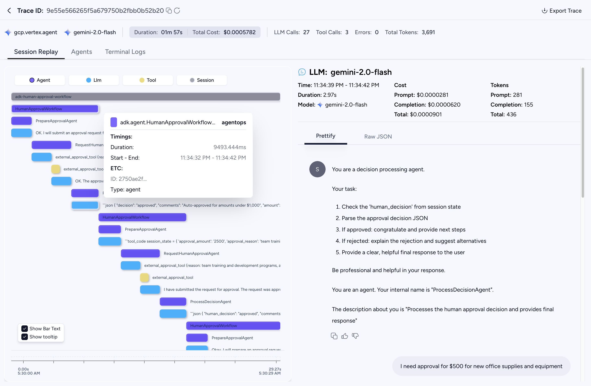

使用 AgentOps 進行 agent 可觀測性¶
只需兩行程式碼，AgentOps 即可為 agent 提供 session 重播、指標與監控功能。
為什麼在 ADK 中選擇 AgentOps？¶
可觀測性是開發與部署對話式 AI agent 的關鍵要素。它讓開發者能夠了解 agent 的運作狀況、agent 與使用者的互動方式，以及 agent 如何使用外部工具與 API。
透過整合 AgentOps，開發者可以深入洞察其 ADK agent 的行為、大型語言模型 (LLM) 互動，以及工具的使用情形。
Google ADK 內建基於 OpenTelemetry 的追蹤系統，主要目的是讓開發者能夠追蹤 agent 內部的基本執行流程。而 AgentOps 則進一步提供專門且更完整的可觀測性平台，包括：
- 統一追蹤與重播分析： 將 ADK 及 AI 技術堆疊中其他元件的追蹤資料整合在一起。
- 豐富的視覺化介面： 直觀的儀表板，能視覺化 agent 執行流程、大型語言模型 (LLM) 呼叫與工具效能。
- 詳細除錯功能： 可深入檢視特定 span，查看提示詞、回應內容、token 數量與錯誤資訊。
- LLM 成本與延遲追蹤： 追蹤延遲、成本（依 token 使用量計算），並找出瓶頸。
- 簡化的設定流程： 只需幾行程式碼即可快速開始。


AgentOps 儀表板顯示一個多步驟 ADK 應用程式執行的追蹤。你可以看到 span 的階層結構，包括主要 agent 工作流程、各個子 agent、大型語言模型 (LLM) 呼叫，以及工具執行。請注意清楚的階層關係：主要工作流程 agent span 內含各種子 agent 操作、LLM 呼叫與工具執行的子 span。
開始在 ADK 中使用 AgentOps¶
將 AgentOps 整合到你的 ADK 應用程式中非常簡單：
-
安裝 AgentOps：
-
建立 API 金鑰 請在此處建立使用者 API 金鑰：Create API Key，並設定您的環境：
將您的 API 金鑰加入至環境變數中：
-
初始化 AgentOps： 請在你的 Agent Development Kit (ADK) 應用程式腳本的開頭（例如，執行 ADK 的主要 Python 檔案
Runner）加入以下程式碼：這將啟動一個 AgentOps 工作階段，並自動追蹤 Agent Development Kit (ADK) 的 agent。
詳細範例：
import agentops import os from dotenv import load_dotenv # Load environment variables (optional, if you use a .env file for API keys) load_dotenv() agentops.init( api_key=os.getenv("AGENTOPS_API_KEY"), # Your AgentOps API Key trace_name="my-adk-app-trace" # Optional: A name for your trace # auto_start_session=True is the default. # Set to False if you want to manually control session start/end. )🚨 🔑 你可以在AgentOps Dashboard註冊後找到你的 AgentOps API 金鑰。建議將其設為環境變數（
AGENTOPS_API_KEY）。
初始化後，AgentOps 會自動開始對你的 Agent Development Kit (ADK) agent 進行自動化監控（instrumentation）。
這就是你所需的全部步驟，即可完整擷取 ADK agent 的所有遙測（telemetry）資料
AgentOps 如何對 ADK 進行自動化監控（Instrumentation）¶
AgentOps 採用先進策略，提供無縫的可觀測性，同時不會與 ADK 內建的遙測功能衝突：
-
中和 ADK 原生遙測：
AgentOps 會偵測 ADK，並智慧性地修補（patch）ADK 內部的 OpenTelemetry tracer（通常為trace.get_tracer('gcp.vertex.agent')）。它會將其替換為NoOpTracer，確保 ADK 自身產生的遙測 span 被有效靜音。這可避免重複追蹤（trace），並讓 AgentOps 成為唯一權威的可觀測資料來源。 -
AgentOps 控制的 Span 建立：
AgentOps 會包裝（wrap）ADK 的關鍵方法，建立有邏輯層級的 span 階層：-
Agent 執行 Span（如
adk.agent.MySequentialAgent）：
當 ADK agent（例如BaseAgent、SequentialAgent或LlmAgent）啟動其run_async方法時，AgentOps 會為該 agent 的執行建立一個父層 span。 -
大型語言模型 (LLM) 互動 Span（如
adk.llm.gemini-pro）：
當 agent 透過 ADK 的BaseLlmFlow._call_llm_async呼叫大型語言模型 (LLM) 時，AgentOps 會建立一個專屬的子 span，通常以 LLM 模型名稱命名。此 span 會擷取請求細節（提示詞、模型參數），並在完成時（透過 ADK 的_finalize_model_response_event）記錄回應細節，如完成內容、token 使用量與結束原因。 -
工具使用 Span（如
adk.tool.MyCustomTool）：
當 agent 透過 ADK 的functions.__call_tool_async使用工具時，AgentOps 會以該工具名稱建立一個完整的子 span。此 span 會包含工具的輸入參數及其回傳結果。
-
-
豐富的屬性收集：
AgentOps 會重用 ADK 內部的資料擷取邏輯，並修補 ADK 特定的遙測函式（如google.adk.telemetry.trace_tool_call、trace_call_llm）。AgentOps 為這些函式設計的包裝器，會將 ADK 擷取的詳細資訊，作為屬性附加到目前作用中的 AgentOps span。
在 AgentOps 中視覺化你的 ADK agent¶
當你使用 AgentOps 對 ADK 應用程式進行自動化監控後，你可以在 AgentOps dashboard 上，清楚地看到 agent 執行的階層式視覺化畫面。
-
初始化：
當呼叫agentops.init()（例如agentops.init(trace_name="my_adk_application")）時，如果初始化參數auto_start_session=True（預設為 true），會建立一個初始父層 span。這個 span 通常會以類似my_adk_application.session的名稱呈現，並作為該追蹤（trace）中所有操作的根節點。 -
ADK Runner 執行：
當 ADKRunner執行頂層 agent（例如負責協調工作流程的SequentialAgent）時，AgentOps 會在 session trace 下建立對應的 agent span。這個 span 會顯示你的頂層 ADK agent 名稱（如adk.agent.YourMainWorkflowAgent）。 -
子 agent 與 LLM／工具呼叫：
當主 agent 執行其邏輯（包含呼叫子 agent、大型語言模型 (LLM) 或工具）時：- 每個子 agent 執行都會以巢狀子 span 顯示於其父 agent 之下。
- 對大型語言模型 (LLM) 的呼叫會產生更深層的子 span（如
adk.llm.<model_name>），並擷取提示詞細節、回應內容與 token 使用量。 - 工具呼叫也會產生獨立的子 span（如
adk.tool.<your_tool_name>），顯示其參數與結果。
這會形成瀑布式的 span 結構，讓你清楚掌握 ADK 應用程式每個步驟的順序、耗時與細節。所有相關屬性（如 LLM 提示詞、完成內容、token 數量、工具輸入／輸出、agent 名稱等）都會被完整擷取並呈現。
如需實際操作範例，你可以參考一份展示 Google ADK 與 AgentOps 結合下「人工審核流程」的 Jupyter Notebook 範例：
Google ADK Human Approval Example on GitHub。
此範例展示了多步驟 agent 流程結合工具使用時，在 AgentOps 的視覺化效果。
優點¶
- 輕鬆設定： 只需極少程式碼變動，即可完整追蹤 ADK。
- 深入可視性： 充分理解複雜 ADK agent 流程的內部運作。
- 更快除錯： 透過詳細追蹤資料，快速定位問題。
- 效能最佳化： 分析延遲與 token 使用情形。
整合 AgentOps 後，ADK 開發者能大幅提升建構、除錯與維護高可靠度 AI agent 的能力。
進一步資訊¶
立即建立 AgentOps 帳號開始體驗。如有功能需求或錯誤回報，請聯繫 AgentOps 團隊：AgentOps Repo。
其他連結¶
🐦 Twitter • 📢 Discord • 🖇️ AgentOps Dashboard • 📙 Documentation